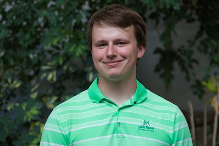
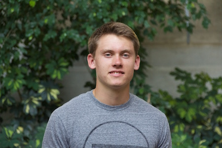
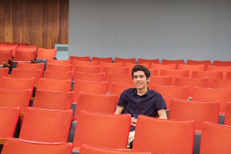
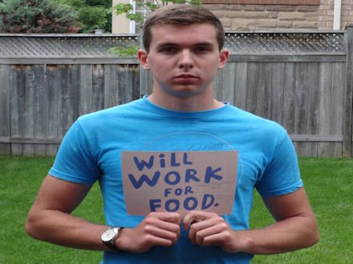

MEET THE FIRST AID TEAM
|  |
NICK SENTJENS
Co-Founder
Born and raised in London, Nick is commonly referred to as Stain by fellow colleagues. Nick’s first language is mathematics and he can commonly be spotted going on runs wearing a sweater. Nick was a Varsity Mathlete for all of his years at St. Thomas Aquinas Catholic Secondary School. This fall Nick will be lacing up his shoes and pulling his elites up again in hopes of winning his third straight intramural dodgeball championships. Currently studying Mechatronics Engineering at the University of Waterloo and a worker at “some engineering firm”. He plans to use his talents to help in the production of The First Aid.
|
|  |
BEN GIBSON
Co-Founder
Meet Ben, a golf enthusiast, Jeep driver and a 2011 graduate of St. Theresa Catholic Elementary School where he graduated with Honors. Ben enjoys working out mainly his upper body at Fit4Less and going to Grand Bend with the boys. Ben’s abilities were shown off when he programmed a spin off of the go to game for indoor recess in elementary school, Tanks. Ben is currently cleaning golf clubs at Highland Golf and Country Club where he is always open to accepting large tips. Advancing his almighty brain power at Western University for Software Engineering, he plays a vital role on The First Aid team.
|
|  |
FERNANDO D'ORIA
Creative Director
Former twitter legend and wannabe Instagram Celebrity; Fernando isn’t opposed to rocking a rowdy shirt from time to time. He recently became the owner of a 2001 Hyundai Elantra that makes some strange noises from time to time. Currently employed by Metro Inc. in the Seafood Department, Fernando has hopes of being a Mutant Mass representative in the near future. Studying Media Theory Production at Western University, he hopes to bring out his creative juices and help the team. Skkrrt skrrt.
|
|  |
BRADLEY WHITLOCK
Director of Operations
Brad is a boy of many talents. He gives great piggybacks, likes it short and sweet, and will work hard for some food. The man knows how to keep a low profile on social media and enjoys making scrabble robots in his free time. This persistence and another synonym for persistence is what makes Brad a great part of the team.
|